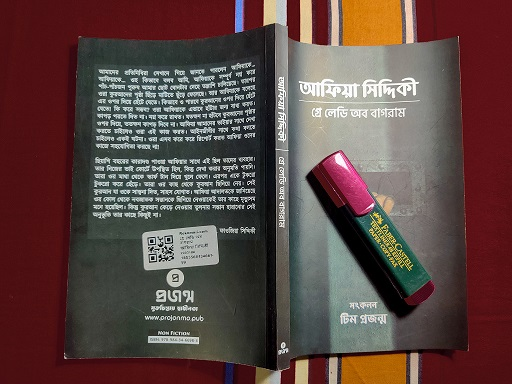

Grey lady of Bagram.
That's what they called her at Bagram jail. Back when she was kidnapped by the ISI from Karachi along with her three children, that was her identity. First she was kidnapped by the Pakistani ISI then handed over to the USA government. The level of torture was so swinish that she turned out looking like a GHOST. This is reason she was named so.
Dr. Afia Siddique. A MIT graduate, a Ph.D. scholar, above all a hafeez-e-Quran. After the historic 9/11, USA announced a "War against terrorism". As part of this war, what they did was invaded Muslim countries, killed Innocents tagging them "terrorists", tortured them, in some case butchered them. Many Innocents were made victim in the name of such cleaning.
Dr. Afia Siddique was such a victim who was seemed to be a "threat" upon the "Cadger of humanity". She was kidnapped for 5 years without any custody. She was tortured, strip-searched, gang- raped several times. Reciting Quran used to be her favorite thing to do and she was told to walk over the torn Quran. What more can be done upon on a hafeez-e- Quran!!!
She was a true Muslim. A Muslim who wasn't just satisfied with practicing alone but a Muslim who was tensed for the people around the world. She was sympathetic towards people from her early days. She used to volunteer old home to take care of them. She was a true version of humane human being.
She started her dawah activities back when she was an undergraduate student in USA. She had always believed in non-violent, peaceful activities. She used to provide free Quran to the prisoners from her own money.
After receiving her Ph.D. in "Learning from imitation (many have had misconception that she is a neuro- scientist, just because her research topic, to make them clear, she is neither a Neuro scientist nor a nuclear physicist), she returned to her motherland and designed a new education curriculum for the kids to make a better generation of Pakistan. Then she was kidnapped for 5 years, was kept away from her children, and finally was been a victim of a staged drama accusing her being a self-destructive bomb invasion. But it was hilarious that when she was brought in front of a court, this accusation was not a part of her charge sheet.

The behavior towards her was so cruel that she wasn't given a chance to defend herself properly. And the worst part is, her own country helped the USA government by the name of "helping to THE WAR AGAINST TERRORISM". She wasn't even given the chance to select her own attorney. To make things worst, the attorney who were selected worked hard enough to make her look criminal rather than innocent. She was charged for an "attempt to murder" case in which she was punished for 86 years where she was the one received two bullet, not the officials. The proofs, the facts everything were in favour of her, yet this anarchy took place. US district Judge, Richard M Barman, was the one who conducted this staged drama.
Dr. Afia Siddique, Grey lady of Bagram is a book written as a part of Afia movement. It was an eclactic collection of statements, interviews, incidents of her early life, education, solicitation, injustice towards her. It's a tale of her hardship just for being a MUSLIM. I was mistaken to think that this book might be an autobiography which is definitely not.
Above all the religions, recism, sex, place everything, the story of Dr. Afia Siddique is painful enough to make anybody fall in love with her, having antipathy for her. She was a true feminist that every Muslim woman should follow. There is a chapter in the book where a speech of her was included regarding the "rights of a Muslim woman in Islam". It was an impressive chapter to read. Her knowledge, wit, understanding was pretty astonishing.
A 30 year old aged woman was picked from the road, kept apart from her children, seen to murder one of them who was only 6 months old, tortured inhumanly, gang raped uncountable times, disgraced, shot with bullet, tried to accuse her as a female leader of " Al-queda" just based on the statement of an al-queda leader, punished to imprison 86 years for nothing, Yet After the judgement announced, she told,
"O you who have believed, if there comes to you a disobedient one with information, investigate, lest you harm a people out of ignorance and become, over what you have done, regretful."
Sura Al- Hujurat 49:6
She forgave everyone, the Injustice judge, the liar witness, the attorneys who set this melodrama.
That's Prisoner No.650, Dr. Afia Siddique for you!!